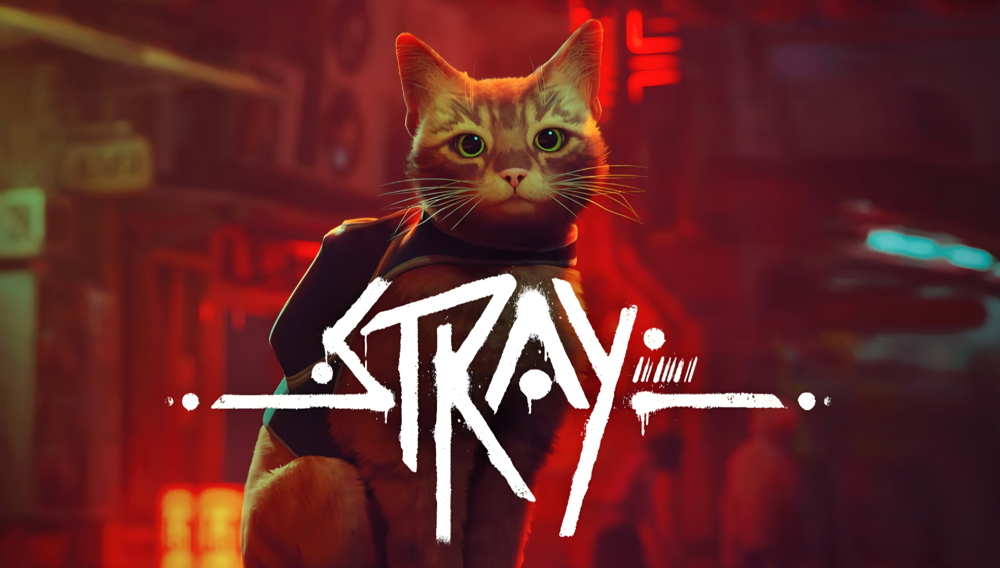
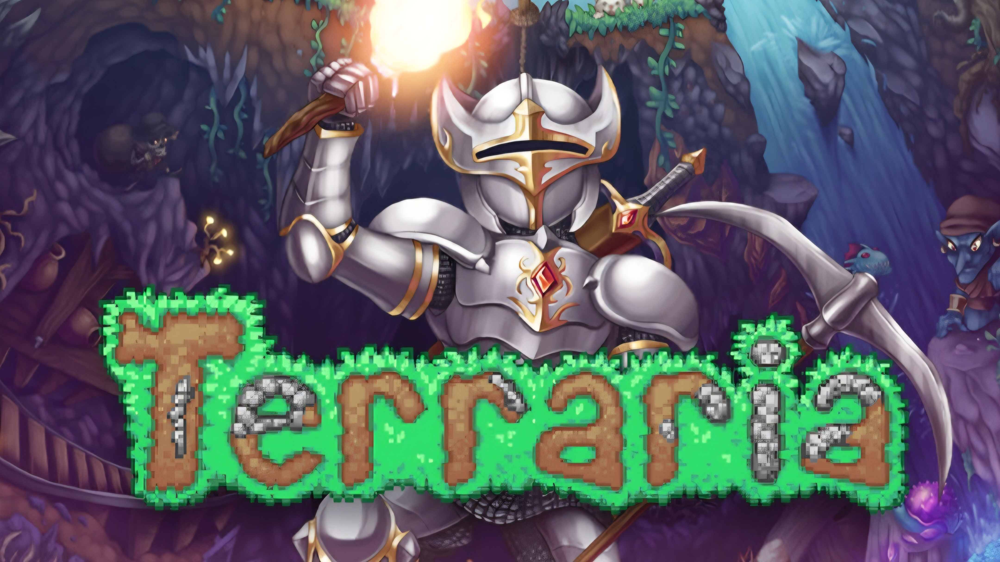
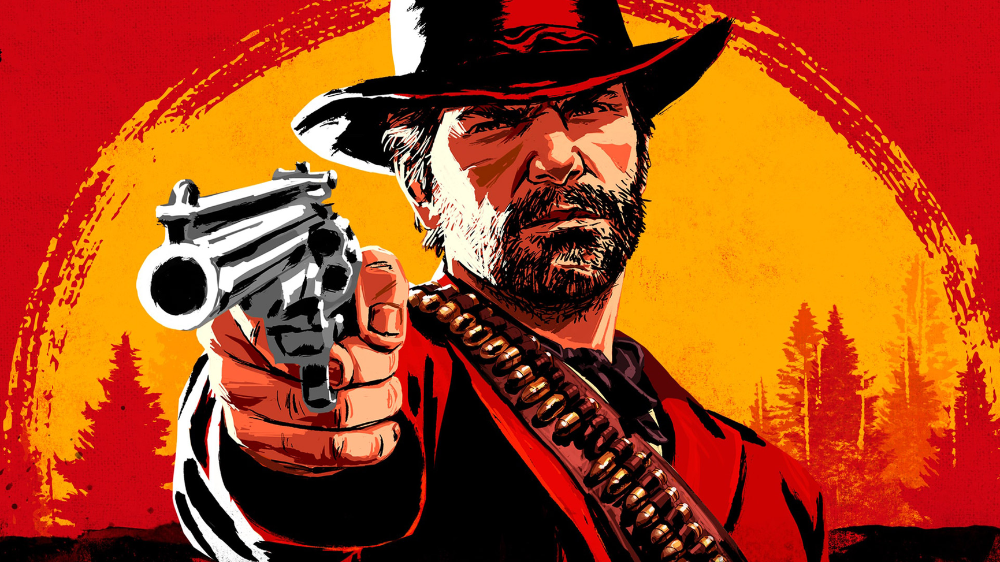

Stray

A game where you unwillingly fall inside a futuristic city.
You explore and make your way through the slums and then midtown
trying to escape and free everybody with your robot companion, b-12.
Stray has realistic graphics and a great gameplay. Despite that the developers
made sure to optimize it beautifully so that players with older systems
can experience the game at a high and consistent frame rate too.
The game is 30 dollars / euros on steam
Stardew Valley

A relaxing game in which you farm and build stuff. Stardew Valley is a game
where you spend your time farming, building stuff, exploring and having fun overall!
It also has caves where you can go mine. It has much content and it is a 2d indie game
made by 1 single person. If you want to support him, go and buy it on steam here.
Terraria

Terraria is a 2d game with tons of exploration and content. It is a sandbox game meaning its a world that you can do anything in. It is like minecraft but 2d and not blocky. It has a ton of structures, epic boss fights and tons of exploration. It also has great weapons and progression. It is also an indie game so if you wanna support the developers, consider getting it on steam.
Read Dead Redemption 2
